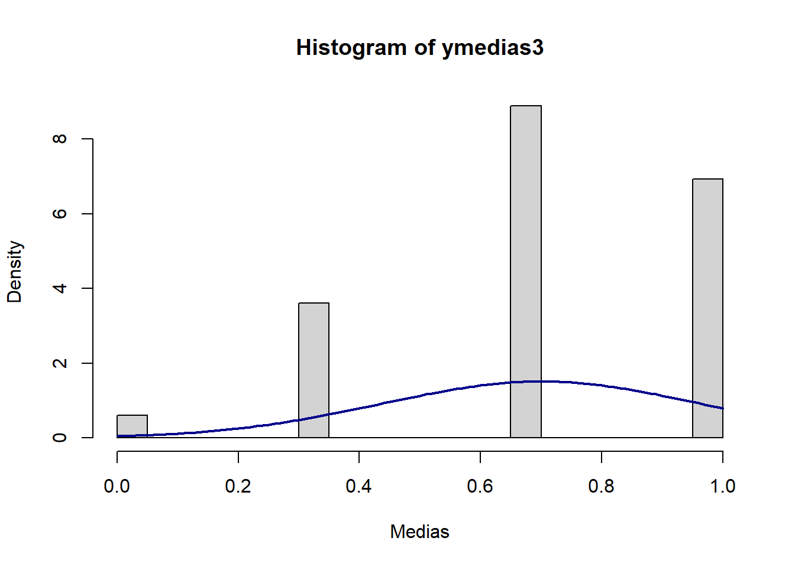
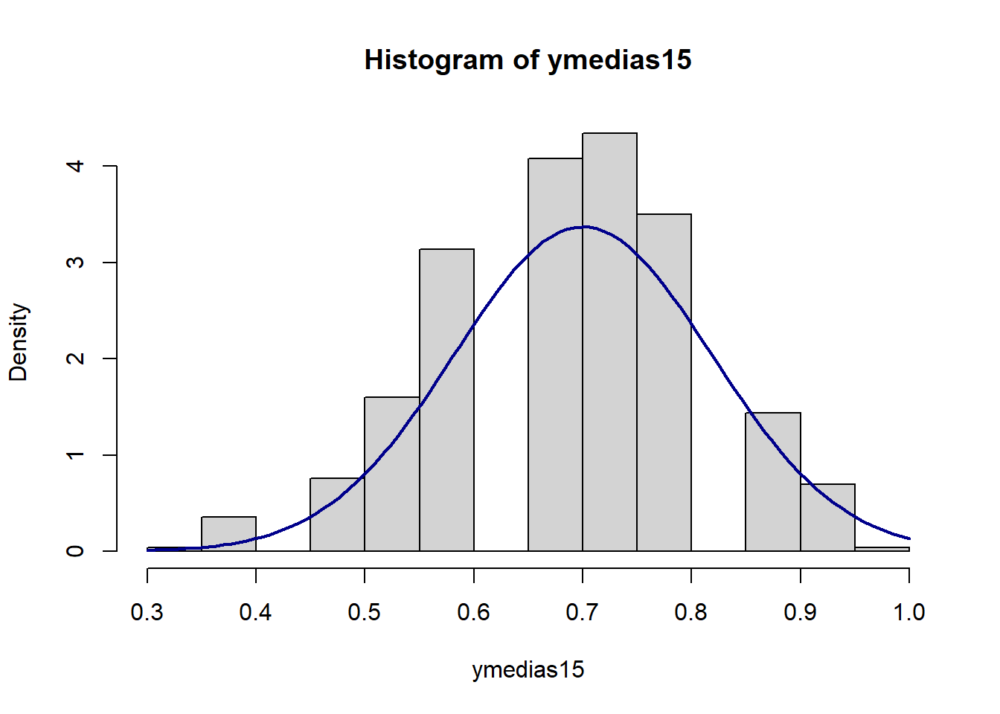
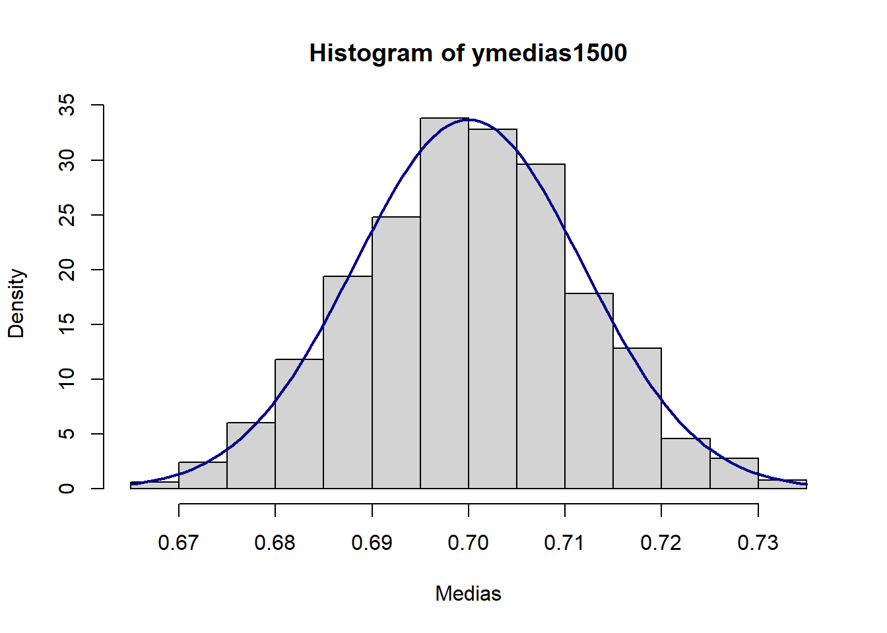

1-pnorm((58-54)/(6/sqrt(50)), mean = 0, sd = 1)[1] 1.214234e-06Considere el problema de regresión no lineal en el que la variable dependiente escalar \(y\) tiene una media condicional \(E(y_i)=g(x_i,\beta)\), siendo \(g(\cdot)\) una función no lineal. Suponga que:
[5 puntos] Plantee el problema de optimización para la minimización de la suma de los errores cuadráticos y obtenga las condiciones de primer orden.
*El problema es minimzar \(\Q_N\) con:
\[Q_N= \sum_i (y_i-g(x_i,\beta))^2\]
Cuyas condiciones de primer orden implican que:
\[\sum_i \frac{\partial g_i}{\partial \beta}(y_i-g_i)=0\]
[10 puntos] Pruebe que \(\hat{\beta}_{MCNL}\), el estimador de mínimos cuadrados no lineales (MCNL) y definido como una raíz de las condiciones de primer orden, es consistente para \(\beta_0\).
$$De las CPO
[10 puntos] Derive una expresión para \(\sqrt{N}(\hat{\beta}_{MCNL}-\beta_0)\) y pruebe que \(\sqrt{N}(\hat{\beta}_{MCNL}-\beta_0)\xrightarrow{d}\mathcal{N}(0,A_0^{-1}B_0A_0^{-1})\). Tip: utilice una expansión de Taylor exacta de primer orden.
[5 puntos] ¿Cómo estimaría \(V(\hat{\beta}_{MCNL})\)?
Suponga que está interesado en una variable aleatoria que tiene una distribución Bernoulli con parámetro \(p\). La función de densidad está definida como:
\[f(x_;p)=\left\{\begin{array} .1 & \text{con probabilidad } p \\ 0 & \text{con probabilidad } 1-p \end{array} \right.\] Suponga que tiene una muestra de \(N\) observaciones independientes e idénticamente distribuidas.
[4 puntos] Plantee la función de log verosimilitud del problema.
Podemos escribir la función de densidad para la \(i\)-ésima observación como
\[f(x_i;p)=p^{x_i}(1-p)^{(1-x_i)}\]
Por tanto, la función de verosimilitud es
\[L_N(p)=\prod_{i=1}^N f(x;p)=\prod_{i=1}^N p^{x_i}(1-p)^{(1-x_i)} = p^{\sum_{i=1}^N x_i}(1-p)^{N-\sum_{i=1}^N x_i}\]
Y la función de log verosimilitud será
\[\mathcal{L_N(p)}=\ln{L_N(p)}=\sum x_i \ln(p)-(N-\sum x_i)\ln(1-p)\]
[4 puntos] Obtenga las condiciones de primer orden y resuelva para \(\hat{p}\).
Derivando \(\mathcal{L}_N\) con respecto a \(p\) obtenemos la condición de primer orden:
\[\frac{d\mathcal{L}_N(p)}{d p}=\frac{\sum x_i}{p}-\frac{N-\sum x_i}{1-p}=0\]
Y resolviendo, obtenemos el estimador de máxima verosimilitud \[\hat{p}_{MV}=\bar{x}\] es decir, la media muestral.
[2 puntos] ¿Cuál es la media y la varianza del estimador de máxima verosimilitud que ha encontrado?
Obtenemos directamente la media \[E(\hat{p}_{MV})=E(\bar{x})=\frac{1}{N}E\left(\sum x_i\right)=\frac{1}{N}N p=p\]
Mientras que la varianza es \[V(\hat{p}_{MV})=\frac{1}{N^2}V\left(\sum x_i\right)=\frac{p(1-p)}{N}\]
Suponga que \(y_i|\mathbf{x}_i\sim\mathcal{N}(m(\mathbf{x}_i,\mathbf{\beta}_0),\sigma_0^2)\), donde \(m(\mathbf{x},\mathbf{\beta})\) es una función del vector de variables explicativas \(\mathbf{x}\) y del vector de parámetros \(\mathbf{\beta}\) de dimensión \((k\times 1)\). Entonces, \(E(y_i|\mathbf{x}_i)=m(\mathbf{x}_i,\mathbf{\beta}_0)\) y \(V(y_i|\mathbf{x}_i)=\sigma^2_0\).
[2 puntos] Escriba la función de log verosimilitud condicional para la observación \(i\). Muestre que el estimador de máxima verosimilitud \(\hat{\mathbf{\beta}}\) resuelve el problema de minimización \(\min_\mathbf{\beta}\sum_i(y_i-m(\mathbf{x}_i,\mathbf{\beta}))^2\).
La densidad de la \(i\)ésima observación es:
\[f(y|x_i)=\frac{1}{\sqrt{2\pi\sigma^2_0}}exp\left(-\frac{1}{2\sigma^2_0}(y-m(x_i,\beta))^2\right)\]
Por tanto, la log verosimilitud para \(i\) es:
\[ \mathcal{l}_i(\beta,\sigma^2)=-\frac{1}{2}\ln(2\pi)-\frac{1}{2}\ln(\sigma^2)-\frac{1}{2\sigma^2}(y_i-m(x_i,\beta))^2 \]
Dado que solo la última parte de este problema depende de \(\beta\), y siendo \(\sigma^2>0\), el problema de maximizar \(\sum_i\mathcal{l}_i(\beta,\sigma^2)\) es igual a maximizar \(\sum_i(y_i-m(x_i,\beta))^2\).
[4 puntos] Sea \(\mathbf{\theta}\equiv(\mathbf{\beta}'\;\sigma^2)'\) un vector de parámetros de dimensión \((k+1)\times 1\). Encuentre el vector score para la observación \(i\). Muestre que \(E(\mathbf{s}_i(\mathbf{\theta}_0)|\mathbf{x}_i)=\mathbf{0}\).
El vector score es el vector de primeras derivadas parciales de la log verosimilitud. Las derivadas parciales son:
\[ \begin{aligned} \frac{\partial \mathcal{l}_i}{\partial\beta}&=\left(\frac{\partial m(x,\beta)}{\partial\beta}\right)'\frac{(y_i-m(x_i,\beta))}{\sigma^2} \\ \frac{\partial \mathcal{l}_i}{\partial\sigma^2}&= -\frac{1}{2\sigma^2}+\frac{1}{2\sigma^4}(y_i-m(x_i,\beta))^2\end{aligned} \]
Noten que \(\left(\frac{\partial \mathcal{l}_i}{\partial\beta}\right)'\) es un vector de \(1\times k\). Podemos escribir el score como:
\[s_i(\beta,\sigma^2)= \begin{pmatrix} \frac{\partial m(x,\beta)}{\partial\beta}\frac{(y_i-m(x_i,\beta))}{\sigma^2} \\ -\frac{1}{2\sigma^2}+\frac{1}{2\sigma^4}(y_i-m(x_i,\beta))^2 \\ \end{pmatrix}\]
Dado que \(E(y_i|x_i)=m(x_i,\beta)\),los primeros \(k\) términos del score tienen esperanza 0. Entonces, nos resta comprobar la última entrada. Calculando el valor esperado del segundo sumando de la última entrada:
\[E((y_i-m(x_i,\beta))^2)=E((y_i-E(y_i|x_i))^2)=V(y_i|x_i)=\sigma^2\]
lo que hace que la última entrada del vector score también tenga esperanza 0.
[2 puntos] Usando las condiciones de primer orden, encuentre \(\hat{\sigma}^2\) en términos de \(\hat{\mathbf{\beta}}\).
La condición de primer orden con respecto a \(\sigma^2\) es
\[\sum_i \left(-\frac{1}{2\sigma^2}+\frac{1}{2\sigma^4}(y_i-m(x_i,\beta))^2\right)\]
Resolviendo para \(\sigma^2\) obtenemos:
\[\hat{\sigma}^2=\frac{1}{N}\sum_i (y_i-m(x_i,\hat{\beta}))^2\]
[5 puntos] Encuentre la matriz hesiana de la función de log verosimilitud con respecto a \(\mathbf{\theta}\).
Procedemos a derivar el score, primero con respecto a \(\beta\) y luego con respecto a \(\sigma^2\).
\(\frac{\partial}{\partial\beta}\left(\frac{\partial m(x,\beta)}{\partial\beta}\frac{(y_i-m(x_i,\beta))}{\sigma^2}\right)=-\frac{1}{\sigma^2}\frac{\partial m(x,\beta)}{\partial\beta}\left(\frac{\partial m(x,\beta)}{\partial\beta}\right)'+\frac{1}{\sigma^2}\frac{\partial m(x,\beta)}{\partial\beta\partial\beta}(y_i-m(x_i,\beta))\)
\(\frac{\partial}{\partial\sigma^2}\left(\frac{\partial m(x,\beta)}{\partial\beta}\frac{(y_i-m(x_i,\beta))}{\sigma^2}\right)=-\frac{1}{\sigma^4}\frac{\partial m(x,\beta)}{\partial\beta}(y_i-m(x_i,\beta))\)
\(\frac{\partial}{\partial\beta}\left( -\frac{1}{2\sigma^2}+\frac{1}{2\sigma^4}(y_i-m(x_i,\beta))^2\right)=-\frac{1}{\sigma^4}\left(\frac{\partial m(x,\beta)}{\partial\beta}\right)'(y_i-m(x_i,\beta))\)
\(\frac{\partial}{\partial\sigma^2}\left( -\frac{1}{2\sigma^2}+\frac{1}{2\sigma^4}(y_i-m(x_i,\beta))^2\right)=\frac{1}{2\sigma^4}-\frac{1}{\sigma^6}(y-m(x_i,\beta))^2\)
Por lo que la matriz Hessiana es:
\[ H_i(\beta,\sigma^2)= \begin{pmatrix} -\frac{1}{\sigma^2}\frac{\partial m(x,\beta)}{\partial\beta}\left(\frac{\partial m(x,\beta)}{\partial\beta}\right)'+\frac{1}{\sigma^2}\frac{\partial m(x,\beta)}{\partial\beta\partial\beta}(y_i-m(x_i,\beta)) & -\frac{1}{\sigma^4}\frac{\partial m(x,\beta)}{\partial\beta}(y_i-m(x_i,\beta)) \\ -\frac{1}{\sigma^4}\left(\frac{\partial m(x,\beta)}{\partial\beta}\right)'(y_i-m(x_i,\beta)) & \frac{1}{2\sigma^4}-\frac{1}{\sigma^6}(y-m(x_i,\beta))^2 \\ \end{pmatrix} \]
[5 puntos] Muestre que \(-E(\mathbf{H}_i(\mathbf{\theta}_0)|\mathbf{x}_i)=E(\mathbf{s}_i(\mathbf{\theta}_0)\mathbf{s}_i(\mathbf{\theta}_0)'|\mathbf{x}_i)\).
Primero mostramos el valor esperado de cada entrada de la matriz hessiana. En la parte b. mostramos que \(E(y-m(x_i,\beta))=0\), por lo que los elementos fuera de la diagonal principal tiene expectativa cero.
Por la misma razón:
\[ \begin{aligned} & E\left(-\frac{1}{\sigma^2}\frac{\partial m(x,\beta)}{\partial\beta}\left(\frac{\partial m(x,\beta)}{\partial\beta}\right)'+\frac{1}{\sigma^2}\frac{\partial m(x,\beta)}{\partial\beta\partial\beta}(y_i-m(x_i,\beta))\right) = \\ & -\frac{1}{\sigma^2}\frac{\partial m(x,\beta)}{\partial\beta}\left(\frac{\partial m(x,\beta)}{\partial\beta}\right)' \end{aligned} \]
El último término usa lo que hemos mostrado antes, \(E((y_i-m(x_i,\beta))^2)=\sigma^2\). Por tanto:
\[ E\left(\frac{1}{2\sigma^4}-\frac{1}{\sigma^6}(y-m(x_i,\beta))^2\right)=-\frac{1}{2\sigma^4} \]
Entonces obtenemos un primer resultado:
\[ -E(H_i(\beta,\sigma^2)|x_i)= \begin{pmatrix} \frac{1}{\sigma^2}\frac{\partial m(x,\beta)}{\partial\beta}\left(\frac{\partial m(x,\beta)}{\partial\beta}\right)' & 0 \\ 0 & \frac{1}{2\sigma^4}\\ \end{pmatrix} \]
Tenemos que mostrar que el valor esperado del producto exterior del score es igual a lo que acabamos de encontrar. Calculamos el valor esperado del producto exterior del score:
\[E(s(\beta,\sigma^2)s(\beta,\sigma^2)'|x_i)=E\left(\begin{pmatrix} A & B \\ B & C \end{pmatrix}\Bigg|x_i\right)\].
El bloque superior de la matriz resultante es \(E(A)\):
\[ \begin{aligned} E(A)&= \frac{\partial m(x,\beta)}{\partial\beta}\left(\frac{\partial m(x,\beta)}{\partial\beta}\right)'\frac{(y_i-m(x_i,\beta))^2}{\sigma^4} \\ &=\frac{1}{\sigma^2}\frac{\partial m(x,\beta)}{\partial\beta}\left(\frac{\partial m(x,\beta)}{\partial\beta}\right)' \end{aligned} \]
El término \(B\) es:
\[E(B)=-\frac{1}{2\sigma^4}\left(\frac{\partial m(x,\beta)}{\partial\beta}\right)'(y-m(x_i,\beta))+\frac{1}{2\sigma^6}\left(\frac{\partial m(x,\beta)}{\partial\beta}\right)'(y-m(x_i,\beta))^3\]
Este término tiene valor esperado cero porque para una variable aleatoria normal \(X\) con media cero, sucede que \(E(X^n)=0\) cuando \(n\) es impar.
Y finalmente, el término \(E(C)\) será:
\[ \begin{aligned} C&= E\left(-\frac{1}{2\sigma^2}+\frac{1}{2\sigma^4}(y_i-m(x_i,\beta))^2\right)\\ &=E\left(\frac{1}{4\sigma^8}(y-m(x_i,\beta))^4-\frac{1}{2\sigma^6}(y-m(x_i,\beta))^2+\frac{1}{4\sigma^4}\right) \\ &=E\left(\frac{1}{4\sigma^8}(y-m(x_i,\beta))^4\right)-\frac{1}{2\sigma^4}+\frac{1}{4\sigma^4} \end{aligned} \]
Para una variable aleatoria \(X\sim \mathcal{N}(0, \sigma^2)\), sucede que \(E(X^4)=3\sigma^4\). Entonces:
\[ \begin{aligned} C&=\frac{3\sigma^4}{4\sigma^8}-\frac{1}{2\sigma^4}+\frac{1}{4\sigma^4} \\ & =\frac{1}{2\sigma^4} \end{aligned} \]
[2 puntos] Encuentre la varianza asintótica estimada de \(\hat{\mathbf{\beta}}\) y explique cómo obtendría los errores estándar.
Por los resultados generales de MV vistos en clase, sabemos que la varianza asintótica está dada por \(E(A_i(\theta))^{-1}\), donde \(A_i(\theta)=-E(H_i(\theta))\), obtenida en la parte e (no confundir con \(A\) del punto anterior, usada para simplificar la presentación de los cálculos sobre el producto exterior del score). Un extimador para la matriz de varianzas es entonces:
\[ \hat{V}(\hat{\beta})=\hat{\sigma}^2\left(\sum_i\frac{\partial m(x_i,\hat{\beta})}{\partial\beta}\left(\frac{\partial m(x_i,\hat{\beta})}{\partial\beta}\right)'\right)^{-1} \]
El error estándar del \(j\)ésimo regresor estimado es simplemente la raíz cuadrada de la \(j\)ésima entrada en la diagonal principal de \(\hat{V}(\hat{\beta})\).
Suponga una variable aleatoria \(X_i\) con distribución desconocida. Sin embargo, sí conocemos que \(E(X)=\mu=54\) y que \(\sqrt{V(X)}=\sigma=6\). Suponga que se recolecta una muestra de 50 observaciones.
[2 punto] ¿Cuál es la distribución asintótica de la media muestral \(\bar{X}\)?
Si se puede aplicar un teorema de límite central a la media muestral, sabemos que la nueva variable hereda la media de \(X_i\) y la desviación estándar es la desviación estándar de \(X_i\) dividida por la raíz del tamaño de la muestra. Es decir:
\[\bar{X}\sim \mathcal{N}(54, 6^2/50)\]
[4 punto] ¿Cuál es la probabilidad de que \(\bar{X}>58\)?
Sabemos que \(\frac{\bar{X}-54}{6/\sqrt{50}}\sim\mathcal{N}(0,1)\), por tanto:
\[P(\bar{X}>58)=P\left(z>\frac{58-54}{6/\sqrt{50}}\right)=P(z>4.714045)=1-\Phi(4.714045)\]
Calculamos la probabilidad usando pnorm, que nos da la función de distribución. La probabilidad es un número muy pequeño:
1-pnorm((58-54)/(6/sqrt(50)), mean = 0, sd = 1)[1] 1.214234e-06[2 punto] ¿Cuál es la probabilidad de que una observación elegida al azar sea tal que \(X_i>58\)?
Es imposible de determinar porque no sabemos la distribución de \(X_i\). Esto es algo muy conveniente de los TLC, pues nos permiten hacer afirmaciones sobre la media muestral sin saber la distribución de la que provienen las observaciones. Solo necesitamos que se cumplan las condiciones sobre las \(X_i\) para aplicar los TLC.
[2 punto] Provea un intervalo de confianza de 99% para la media muestral.
Por un lado, sabemos que la variable aleatoria \(Z=\frac{\bar{X}-\mu}{\sigma/\sqrt{N}}\) tendrá una distribución \(\mathcal{N}(0,1)\). Por otro lado, queremos obtener \(P(-z_{\alpha/2}<Z<z_{\alpha/2})=0.99\). Manipulando, obtenemos una expresión para el intervalo de confianza:
\[\left(\bar{X}-z_{\alpha/2}\frac{\sigma}{\sqrt{N}},\bar{X}+z_{\alpha/2}\frac{\sigma}{\sqrt{N}}\right)\]
En nuestro caso, el intervalo es:
\[P\left(\bar{X}\pm 2.5758\times(6/\sqrt{50})\right)=0.99\]
donde obtenemos el 2.5758 como:
qnorm(0.995)[1] 2.575829qnorm es la función cuantil y está definida como la función inversa de la función de distribución. La función cuantil da el valor de \(x\) tal que \(F(x)=P(X \leq x)=p\).
Entonces, el intervalo de confianza es: \[P(\bar{X}\pm 2.185664)=0.99\]
En esta pregunta mostraremos los alcances de los teoremas del límite central. Para esto, generaremos muchas muestras de tamaño \(N\) con una distribución \(Bernoulli\) con probabilidad de éxito \(p=0.3\). Recuerde que cuando realice simulaciones, siempre debe fijar una semilla al inicio para poder replicar su trabajo.
[2 puntos] ¿Cuál es la media y la varianza de una variable aleatoria \(y_i \sim Bernoulli(0.3)\)?
Para una variable que se distribuye \(Bernoulli(p)\), la media es \(p\) y la varianza es \(p(1-p)\). Para este caso, \(E(y_i)=0.3\) y \(V(y_i)=0.3*0.7=0.21\).
[2 puntos] Si \(y_i\) son iid y podemos aplicar un teorema de límite central, ¿cuál es la distribución teórica de \(\bar{y}\) cuando \(N\to\infty\)?
Obtenemos el valor esperado y la varianza de \(\bar{y}\):
\[E(\bar{y})=\frac{1}{N}E(\sum_i y_i) = E(y_i)=p\]
\[V(\bar{y})=\frac{1}{N^2}V(\sum_i y_i) = \frac{1}{N}V(y_i)=\frac{p(1-p)}{N}\]
Entonces, un TLC nos daría las condiciones para que:
\[\frac{\bar{y}-0.3}{0.21/N}\sim\mathcal{N}(0, 1)\]
[5 puntos] Realice el siguiente procedimiento \(J=1,000\) veces. Obtenga una muestra de tamaño \(N=2\) a partir de la distribución \(Bernoulli(0.3)\) y calcule la media muestral \(\bar{y}\). Coleccione las \(J\) medias muestrales y luego grafique un histograma de las medias muestrales obtenidas junto con una curva teórica normal con la media y varianza obtenida en la parte b. Comente sobre lo que observa.
set.seed(820)
reps <- 1000
n <- 2
p <- 0.3
v <- p*(1-p)/n
ymedias2 <- numeric(reps)
for (i in 1:reps){
sample <- rbernoulli(n, p)
ymedias2[i]<-mean(sample)
}Graficamos junto con una densidad \(N(0.3, 0.21/2)\):
hist(ymedias2, breaks=20, prob=TRUE,
xlab="Medias")
curve(dnorm(x, mean=p, sd=sqrt(v)),
col="darkblue", lwd=2, add=TRUE, yaxt="n")
El histograma no se parece nada a la curva normal.
[3 puntos] Repita lo realizado en la parte b., ahora con \(N=10\). Comente sobre lo que observa.
reps <- 1000
n <- 10
p <- 0.3
v <- p*(1-p)/n
ymedias10 <- numeric(reps)
for (i in 1:reps){
sample <- rbernoulli(n, p)
ymedias10[i]<-mean(sample)
}Graficamos junto con una densidad \(N(0.3, 0.21/10)\):
hist(ymedias10, breaks=20, prob=TRUE)
curve(dnorm(x, mean=p, sd=sqrt(v)),
col="darkblue", lwd=2, add=TRUE, yaxt="n")
El histograma comienza a tener una forma normal. De hecho, se parece ya bastante.
[3 puntos] Repita lo realizado en la parte b., ahora con \(N=10,000\). Comente sobre lo que observa.
#|echo: true
reps <- 1000
n <- 10000
p <- 0.3
v <- p*(1-p)/n
ymedias10000 <- numeric(reps)
for (i in 1:reps){
sample <- rbernoulli(n, p)
ymedias10000[i]<-mean(sample)
}Graficamos junto con una densidad \(N(0.3, 0.21/10000)\):
hist(ymedias10000, breaks=20, prob=TRUE,
xlab="Medias")
curve(dnorm(x, mean=p, sd=sqrt(v)),
col="darkblue", lwd=2, add=TRUE, yaxt="n")
El histograma se parece ya a la curva normal teórica, con una varianza muy pequeña, con la gran mayoría de las medias concentradas muy cerca del valor esperado.
[5 puntos] ¿Cómo usaría este ejercicio con palabras simples para explicar a una persona que no sabe mucho de estadística sobre la importancia de los teoremas de límite central?
Un TLC nos permite hacer afirmaciones sobre la distribución de un estadístico. Un estadístico es un resumen de los datos, por lo que nos interesa usar dichos estadísticos para describir características de los fenómenos que estudiamos usando datos. Queremos saber cosas como lo que esperamos en promedio que suceda con una variable, o qué tanta variabilidad dicha variable tendrá en la población. Con un TLC podemos hacer afirmaciones sobre cómo lucen promedios muestrales de la variable que estudiamos cuando tenemos suficientes observaciones. Nos dice en particular que va a tener una distribución normal.
Use los datos en el archivo motral2012.csv, que incluye una muestra de individuos con sus características socioeconómicas. Nos interesa conocer los factores que afectan la probabilidad de que los individuos tengan ahorros. Considere lo siguiente sobre las opciones de ahorro de los entrevistados, contenida en la variable p14:
[2 puntos] Comience generando una variable binaria ahorra que tome el valor de 1 para las personas que ahorran y 0 en otro caso. Construya también la variable mujer que tome el valor de 1 cuando sex toma el valor de 2 y 0 en otro caso.
Generamos variables:
data.financiero <- read_csv("../files/motral2012.csv",
locale = locale(encoding = "latin1")) %>%
clean_names() %>%
mutate(ahorra = ifelse(is.na(p14), 0, 1),
mujer=ifelse(sex==2,1,0))[3 puntos] Estime un modelo de probabilidad lineal que relacione ahorra como variable dependiente con eda (edad), anios_esc (años de escolaridad) y mujer. Reporte los errores que asumen homocedasticidad y los errores robustos a heteroscedasticidad.
Estimamos el modelo lineal y obtenemos la matriz de varianzas robusta usando vcovHC:
summary(reg.lineal <- lm(ahorra ~ eda + anios_esc + mujer,
data = data.financiero))
Call:
lm(formula = ahorra ~ eda + anios_esc + mujer, data = data.financiero)
Residuals:
Min 1Q Median 3Q Max
-1.9816 -0.4626 -0.2984 0.4947 0.8254
Coefficients:
Estimate Std. Error t value Pr(>|t|)
(Intercept) 0.4559531 0.0303390 15.029 < 2e-16 ***
eda -0.0049494 0.0006541 -7.567 4.5e-14 ***
anios_esc 0.0174601 0.0014516 12.028 < 2e-16 ***
mujer -0.0140326 0.0134973 -1.040 0.299
---
Signif. codes: 0 '***' 0.001 '**' 0.01 '*' 0.05 '.' 0.1 ' ' 1
Residual standard error: 0.4892 on 5260 degrees of freedom
Multiple R-squared: 0.04033, Adjusted R-squared: 0.03978
F-statistic: 73.69 on 3 and 5260 DF, p-value: < 2.2e-16#Matriz robusta
v_rob <- vcovHC(reg.lineal, type = "HC0")
se_rob <- sqrt(diag(v_rob))Presentamos usando stargazer, aunque pueden usar el paquete de su preferencia. Por ejemplo, quizás quieran darle una revisada a modelsummary.
stargazer(reg.lineal, reg.lineal,
se = list(NULL, se_rob),
digits = 4,
type = 'html')|
Dependent variable: |
||
|
ahorra |
||
|
(1) |
(2) |
|
|
eda |
-0.0049*** |
-0.0049*** |
|
(0.0007) |
(0.0007) |
|
|
anios_esc |
0.0175*** |
0.0175*** |
|
(0.0015) |
(0.0024) |
|
|
mujer |
-0.0140 |
-0.0140 |
|
(0.0135) |
(0.0135) |
|
|
Constant |
0.4560*** |
0.4560*** |
|
(0.0303) |
(0.0385) |
|
|
Observations |
5,264 |
5,264 |
|
R2 |
0.0403 |
0.0403 |
|
Adjusted R2 |
0.0398 |
0.0398 |
|
Residual Std. Error (df = 5260) |
0.4892 |
0.4892 |
|
F Statistic (df = 3; 5260) |
73.6878*** |
73.6878*** |
|
Note: |
p<0.1; p<0.05; p<0.01 |
|
[3 puntos] ¿Cuál es el efecto en la probabilidad de ahorrar si los años de educación se incrementan en una unidad, pasando de 3 a 4 años de educación?
En un modelo lineal esto es simplemente un incremento en 1.75 puntos porcentuales.
[4 puntos] Realice una prueba de significancia conjunta de eda y anios_esc. ¿Qué concluye?
Podemos usar la función linearHypothesis:
car::linearHypothesis(reg.lineal, c("eda=0", "anios_esc=0"))Linear hypothesis test
Hypothesis:
eda = 0
anios_esc = 0
Model 1: restricted model
Model 2: ahorra ~ eda + anios_esc + mujer
Res.Df RSS Df Sum of Sq F Pr(>F)
1 5262 1311.5
2 5260 1258.9 2 52.597 109.88 < 2.2e-16 ***
---
Signif. codes: 0 '***' 0.001 '**' 0.01 '*' 0.05 '.' 0.1 ' ' 1Concluimos que no hay evidencia para afirmar que \(\beta_{eda}=\beta_{anios\_esc}=0\).
[4 puntos] Estime un modelo probit relacionando las mismas variables. Use la función avg_slopes del paquete marginaleffects para obtener los efectos marginales promedio de un cambio en cada uno de los regresores. ¿Por qué difiere la magnitud de este efecto marginal con respecto a la parte c.?
Estimamos el modelo probit:
reg.probit <- glm(ahorra ~ eda + anios_esc + mujer,
family = binomial(link = "probit"),
data = data.financiero)
summary(reg.probit)$coef Estimate Std. Error z value Pr(>|z|)
(Intercept) -0.18770947 0.083351859 -2.252013 2.432145e-02
eda -0.01258123 0.001703646 -7.384884 1.525863e-13
anios_esc 0.05130108 0.004480285 11.450404 2.340518e-30
mujer -0.04077164 0.035053348 -1.163131 2.447763e-01Noten que el signo de los coeficientes coinciden con el promedio de los efectos marginales:
avg_slopes(reg.probit)
Term Contrast Estimate Std. Error z Pr(>|z|) S 2.5 % 97.5 %
anios_esc dY/dX 0.01977 0.001659 11.91 <0.001 106.3 0.01651 0.02302
eda dY/dX -0.00485 0.000646 -7.50 <0.001 43.9 -0.00611 -0.00358
mujer 1 - 0 -0.01571 0.013504 -1.16 0.245 2.0 -0.04218 0.01076
Columns: term, contrast, estimate, std.error, statistic, p.value, s.value, conf.low, conf.high
Type: response El promedio del efecto marginal de un cambio en los años de educación es de 2 puntos porcentuales. Ligeramente superior al efecto obtenido en el modelo lineal.
[4 puntos] Ahora estime el efecto marginal en la media para eda y anios_esc y para las mujeres, usando la función slopes. ¿Por qué difiere la magnitud de este efecto marginal respecto a la parte c. y la d.?
Para obtener los efectos marginales evaluados en algun valor \(X_i\) de los covariables, debemos especificar estos valores usando datagrid:
avg_slopes(reg.probit,
newdata = datagrid(eda = mean(data.financiero$eda),
anios_esc = mean(data.financiero$anios_esc),
mujer = 1))
Term Contrast Estimate Std. Error z Pr(>|z|) S 2.5 % 97.5 %
anios_esc dY/dX 0.0204 0.001779 11.46 <0.001 98.5 0.01689 0.02386
eda dY/dX -0.0050 0.000677 -7.38 <0.001 42.5 -0.00632 -0.00367
mujer 1 - 0 -0.0162 0.013944 -1.16 0.245 2.0 -0.04355 0.01111
Columns: term, contrast, estimate, std.error, statistic, p.value, s.value, conf.low, conf.high
Type: response El efecto marginal de un cambio en los años de escolaridad evaluados en la media de los años de educación y edad, para las mujeres, es de 2.04 puntos. Esto difiere del modelo lineal porque en el modelo lineal los efectos marginales son constantes, mientras que los efectos marginal del modelo no lineal dependen del punto de evaluación. También difiere de los efectos marginales promedio pues aquí solo hemos calculado el efecto marginal una sola vez, para un valor \(X_i\), mientras que el promedio de efectos marginales implica calcular el efecto marginal para cada individuo y luego obtener el promedio.
En clase les pregunté cómo estimarían el error estándar de los cambios marginales y brevemente mencioné que una forma muy usada es el Método Delta, el cual se basa en que los efectos marginales son funciones no lineales de los parámetros. Esto es lo que efectivamente se usa en la función avg_slopes para obtener los errores estándar y los intervalos de confianza. Aquí pueden leer al respecto.
Ahora estimará un modelo multinomial empleando los mismos datos en motral2012.csv. El propósito será ahora estudiar los factores relevantes para predecir la forma de ahorro que tienen las personas que ahorran.
[2 punto] Genere una variable categórica llamada ahorro que sea igual a 1 cuando p14 sea igual a 1 o 2, igual a 2 cuando p14 sea igual a 7, e igual a 3 cuando p14 sea igual a 3, 4, 5, 6 u 8. Haga que esa variable sea missing cuando p14 sea missing. Posteriormente, convierta esta nueva variable en una de factores de forma que el valor 1 tenga la etiqueta “Banco”, el valor 2 tenga la etiqueta “Casa” y el valor 3 tenga la etiqueta “Otro”.
Construimos la variable dependiente:
data.financiero <- read_csv("../files/motral2012.csv",
locale = locale(encoding = "latin1")) %>%
clean_names() %>%
mutate(ahorro=NA) %>%
mutate(ahorro=ifelse(p14%in%c(1,2),1,ahorro)) %>%
mutate(ahorro=ifelse(p14==7,2,ahorro)) %>%
mutate(ahorro=ifelse(p14%in%c(3,4,5,6,8),3,ahorro)) %>%
mutate(ahorro=factor(ahorro,
levels=c(1,2,3), labels=c("Banco","Casa","Otro"))) %>%
mutate(mujer=ifelse(sex==2,1,0))[4 puntos] Estime un modelo logit multinomial (regresores invariantes a la alternativa) con la opción de ahorro como variable dependiente y los mismos regresores de la pregunta 5. Hay varios paquetes para hacer esto, pero recomiendo usar la función multinom del paquete nnet. ¿Qué puede decir sobre el coeficiente de años de educación en la alternativa “Casa”?
Usamos multinom para estimar el modelo logit multinomial:
multilogit <- nnet::multinom(ahorro~ eda + anios_esc + mujer,
data=data.financiero)# weights: 15 (8 variable)
initial value 2727.854313
iter 10 value 2546.085070
final value 2545.712541
convergedsummary(multilogit)Call:
nnet::multinom(formula = ahorro ~ eda + anios_esc + mujer, data = data.financiero)
Coefficients:
(Intercept) eda anios_esc mujer
Casa 3.026880 -0.052310196 -0.14829719 0.09265405
Otro 0.206704 -0.003501367 -0.04628175 -0.06459305
Std. Errors:
(Intercept) eda anios_esc mujer
Casa 0.2487107 0.005207439 0.01355319 0.09956544
Otro 0.2476498 0.004964123 0.01285100 0.09995715
Residual Deviance: 5091.425
AIC: 5107.425 En el logit multinominal (regresores invariantes) el coeficiente se interpreta con respecto a una categoría base. En este caso, la categoría base es Banco. El modelo implica que la probabilidad de ahorrar en casa disminuye con un año más de educación, en comparación con la probabilidad de ahorrar en el banco. En particular, sabemos que podemos escribir el log del cociente de la probabilidad de las categorías \(j\) y \(k\) sean escogidas, normalizando \(k\) a ser la base, como:
\[\ln\left(\frac{P(y=Casa)}{P(y=Banco)}\right)=x'\beta=\beta_0+\beta_1 edad + \beta_2 educación + \beta_3 mujer \]
Es decir, un año más de educación se asocia con una reducción en el log de la razón de momios de 0.15.
[6 puntos] Calcule los efectos marginales promedio sobre la probabilidad de ahorrar en el banco. Al considerar el cambio en la probabilidad para el caso de las mujeres (cuando la variable mujer pasa de 0 a 1), ¿de qué tamaño es el efecto predicho en la probabilidad de ahorrar en el banco?
Usamos avg_slopes:
avg_slopes(multilogit)
Group Term Contrast Estimate Std. Error z Pr(>|z|) S 2.5 %
Banco anios_esc dY/dX 0.02285 0.002381 9.595 <0.001 70.0 0.01818
Banco eda dY/dX 0.00657 0.000935 7.027 <0.001 38.8 0.00474
Banco mujer 1 - 0 -0.00343 0.019432 -0.177 0.860 0.2 -0.04152
Casa anios_esc dY/dX -0.02512 0.002231 -11.262 <0.001 95.3 -0.02949
Casa eda dY/dX -0.00982 0.000860 -11.422 <0.001 98.0 -0.01151
Casa mujer 1 - 0 0.02271 0.017662 1.286 0.199 2.3 -0.01191
Otro anios_esc dY/dX 0.00228 0.002174 1.046 0.295 1.8 -0.00199
Otro eda dY/dX 0.00325 0.000842 3.863 <0.001 13.1 0.00160
Otro mujer 1 - 0 -0.01927 0.017549 -1.098 0.272 1.9 -0.05367
97.5 %
0.02751
0.00840
0.03465
-0.02075
-0.00814
0.05732
0.00654
0.00490
0.01512
Columns: term, group, contrast, estimate, std.error, statistic, p.value, s.value, conf.low, conf.high
Type: probs El efecto de ser mujer es de una reducción de 0.3 puntos en la probabilidad de ahorrar en el banco al estimar el promedio de los efectos marginales.
[4 puntos] Calcule los cocientes de riesgo relativo (relative risk ratios o RRR). ¿Qué significa el hecho de que el RRR asociado a ser mujer sea mayor que 1 en la alternativa “Casa”?
(multilogit_rrr = exp(coef(multilogit))) (Intercept) eda anios_esc mujer
Casa 20.632752 0.9490344 0.8621748 1.0970821
Otro 1.229619 0.9965048 0.9547729 0.9374489Los coeficientes en forma de RRR tienen la interpretación del cambio en el riesgo relativo que una categoría sea elegida con relación al riesgo de escoger la categoría base. En este caso, el ser mujer está asociado con una probabilidad de ahorrar en “Casa” 1.097 veces mayor de que la de ahorrar en “Banco”.
[4 puntos] Estime nuevamente el modelo, pero ahora, especifique que la alternativa “Casa” sea la alternativa base. ¿Cómo es el RRR de la edad en la alternativa “Banco”? ¿Es esto congruente con lo que obtuvo en la parte d. de esta pregunta?
Primero tenemos que cambiar la base. Para esto hacemos uso de que ahorro es una variable de factores. Luego estimamos:
data.financiero <- data.financiero %>%
mutate(ahorro = relevel(ahorro, ref = "Casa"))
multilogit2 <- nnet::multinom(ahorro ~ eda + anios_esc + mujer,
data=data.financiero)# weights: 15 (8 variable)
initial value 2727.854313
iter 10 value 2552.696634
final value 2545.712541
convergedObtenemos el RRR:
(multilogit2_rrr = exp(coef(multilogit2))) (Intercept) eda anios_esc mujer
Banco 0.04846638 1.053703 1.159857 0.9115111
Otro 0.05959489 1.050020 1.107401 0.8544952Al cambiar la categoría base a Casa solo se modifica la interpretación relativa. En la parte d. el RRR de la edad para la opción de Casa era 0.949, es decir, si la edad se incrementa en una unidad, la probabilidad de ahorrar en Casa es 0.949 veces la de ahorrar en Banco. Con la nueva categoría base, el RRR de la edad para ahorrar en Banco es 1.054, es decir, si la edad se incrementa en un año, la probabilidad de ahorrar en Banco es 1.054 veces más probable que la probabilidad de ahorrar en Casa. La parte d. implica que \(P(Casa)=0.949(Banco)\). Mientras que estimando el modelo con la nueva categoría, \(P(Banco)=1.054(Casa)\), o \(P(Casa)=1/1.054(Banco)\). Empleando todos los decimales en R se puede notar que 1/1.054≅0.949 Ambos resultados son consistentes.